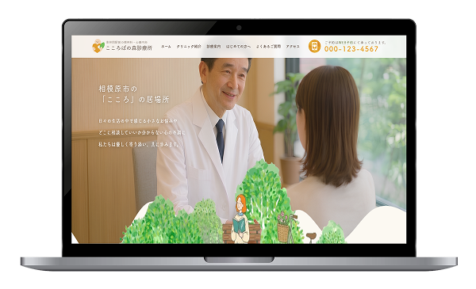

WORKS
制作物

心に寄り添う街のかかりつけ医『こころばの森診療所』
安心して相談できる空間づくりをコンセプトにした、架空の精神科・心療内科のWebサイトを制作しました。
精神的な不安を抱えるユーザーが落ち着いて閲覧できるよう、淡い配色や余白を活かしたシンプルなレイアウトを採用し、圧迫感のないデザインに仕上げています。
また、診療内容や院内の雰囲気を丁寧に伝えることで、不安を少しでも軽減し、初めての方でも通いやすいと感じられるサイトを目指しました。
精神科・心療内科の受診を検討しているユーザーに向けて、対応している症状や診療内容を分かりやすく伝え、自分に合った病院かどうかを安心して判断できることを目的として制作しました。
また、初診予約や電話でのお問い合わせへ自然に繋げられるよう、必要な情報へスムーズにアクセスできる導線設計を意識しています。
30代後半〜40代前半の働き盛りで家庭を持つ夫婦層
仕事や家庭の両立によるストレスや精神的な不調を感じており、安心して通える心療内科・精神科を探しているユーザーを想定しています。
また、初めて心療内科を受診することへの不安が強く、病院の雰囲気や診療内容を事前にしっかり確認したいユーザーをターゲットとしています。
癒しと落ち着き
見出し：FOT-筑紫A丸ゴシック Std
本文：游ゴシック体
安心感や親しみやすさを表現するために、見出しには丸みのある「FOT-筑紫A丸ゴシック Std」を使用しました。
本文には可読性の高い「游ゴシック体」を採用し、やさしく落ち着いた印象で統一しています。
清潔感を表現するために、ベースカラーには白色の「#FFF」を使用しました。
メインカラーの「#FCF9F2」でやさしく落ち着いた雰囲気を演出し、アクセントカラーには温かみを感じるビタミンカラーの「#EAA32A」を採用しています。
全体を淡くやわらかな色味で統一することで、安心して通える心療内科のイメージを表現しました。
2025年11月
企画・構成：6時間
デザイン制作：24時間
コーディング：32時間
全7ページ
トップページ
クリニック紹介
診療案内
はじめての方へ
よくある質問
アクセス
Web予約ページ
Figma / Visual Studio Code / jQery